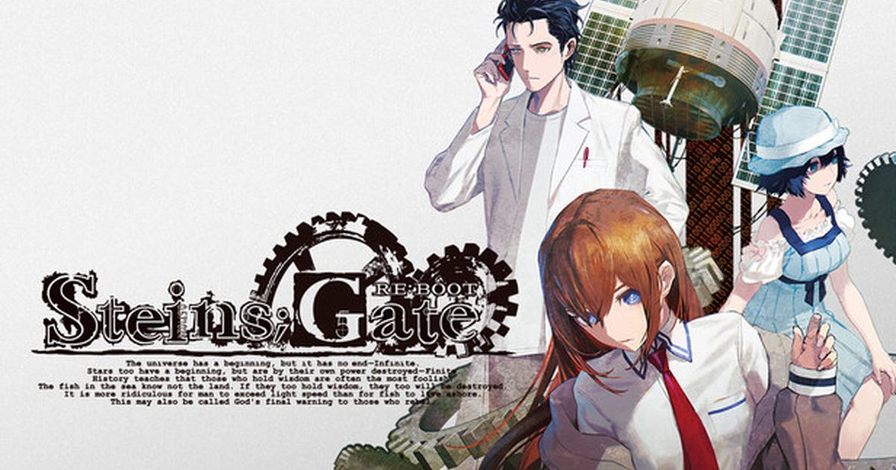

2026-08-14 · 视觉小说
2009 年那款把「 chimney 」梗和「送达过去的一条短信改变世界」焊进一代人记忆的《命运石之门》，要在 2026 年 8 月 20 日（Steam / Xbox Series，部分地区 8/19 深夜解锁）以《Re:Boot》之名彻底重制归来。MAGES. 做这版的理由如果只是为了「卖情怀」，那它大概率只是又一份高清贴图；但制作人松原达也甩出了一句很硬的话——这次加了一条「从未有人观测过的世界线」。这篇写给两类人：从没碰过 Stein;s Gate 的新人，和已经把「El Psy Congroo」当口头禅的老兵。

先说清楚《Re:Boot》是什么：它是 2009 年 Xbox 360 原作的「现代完全重制版」，剧本基于 2018 年的《STEINS;GATE ELITE》（也就是用过动画版演出镜头的那个版本）做彻底翻新。平台分两批：Steam 与 Xbox Series X|S 在 8 月 20 日先发，PS5 / Switch / Switch 2 要等到 10 月 29 日。国区定价标准版 198 元、豪华版 298 元，首发九折（标准版约 178 元），还白送一个 80 年代 PC 风格外传《Octet of Shifting Space》（10/29 解锁，预购窗口到 11/30 日）。
光看这些，它和市面上一抓一把的「高清重制」没什么两样。真正让它区别于「换皮圈钱」的，是那条新路线。
1) Gamma 世界线（γ），这是核心卖点。官方描述是：时间机器从未被造出来，能改写过去的 D-Mail 也不存在；更狠的是，主角冈部伦太郎身上那个「凤凰院凶真（ Hououin Kyouma）」的中二人格，在这个世界线里「从未存在过」——取而代之的，是冈部和角色「 kiryu 萌郁」一起亲手沾上污点，独自面对孤独与绝望。换句话说，这不是在主线上加一段支线，而是把主角最核心的「疯癫科学家的浪漫外壳」整个抽掉，逼你直面一个没有退路的冈部。制作人原话是「从未有人观测过的故事」，分量等同于半部新作。
2) 画面与演出全套重做。原画师 huke 亲自把所有角色立绘和主视觉按现在的画风重写，服装配饰做了现代化调整；事件 CG 数量比 Xbox 360 原版翻了一倍，背景图增加约 20%；更关键的是引入了 E-mote 动态立绘技术——角色对话时的微表情、呼吸起伏都动起来了。音效方面，全语音重新收录，全部 BGM 由系列作曲阿保刚（Takeshi Abo）从头重制，秋叶原街景按当年真实资料做了照片级还原。对一个靠「氛围」吃饭的科幻 ADV 来说，这套翻新直接改命。
3) 系统现代化。UI 重做、文本量大幅扩充（承接 ELITE 被动画演出吃掉的大量 VN 独白），读起来比 ELITE 更顺。但那个著名的「手机触发（Phone Trigger）」决策系统保留了——你要在对的时间用手机发对的信息，才能跳到对的结局。它依然是文字冒险，不是动作游戏。
老粉心里都有一个问号：一个我已经通关三四遍、连真结局都背得出的故事，凭什么值得我再花 198 块？我的判断是——值不值，完全取决于你把它当「重看」还是当「补完」。如果只为重温主线，那它确实只是更漂亮的旧物；但 Gamma 世界线 + 翻倍的 CG + 重制 BGM，本质上是在给原作「补一层当年受技术所限没画出来、没写出来的厚度」。对一个视觉小说而言，新增一条能改写主角人格的官方路线，几乎等于官方同人转正——这种待遇，大部分重制版给不了。
另一个常被忽略的点：海外媒体 Game8 的评测给了「Peak Sci-Fi Strikes Again」，但也诚实地列出三个缺点——前半段依然「极其慢」、手机触发系统不直观、部分角色初期的幽默有点膈应。这恰恰说明《Re:Boot》没有为了讨好新人而削掉原作的脾气。那「慢前半段」到底是 bug 还是 feature？我们站 feature：Stein;s Gate 的精髓就是「用一堆看似无聊的日常把刀磨到最薄，再一刀下去」，删掉铺垫就等于删掉那一刀的重量。新人如果冲着「快节奏悬疑」来，大概率会在前 5 小时走神；但熬过去，才是它封神的原因。
至于「该先玩哪版」这个新手最常问的问题：我们建议——完全没接触过的人，可以拿《Re:Boot》当入坑作（现代化呈现最友好），但也可以先看 2011 年动画版（节奏更快、48 分钟就能上头）；老兵则建议直接《Re:Boot》，为 Gamma 路线和重制 BGM 而来。两者不冲突，反而互补。
我们的评分：8.5 / 10（重制价值）。扣分给「前半段慢 + 手机触发仍反人类」，加分给「Gamma 世界线这条真·新内容」和「阿保刚全曲重制」。对老粉它是必入，对新人是高门槛但高回报的入坑首选。
我们的观察：这次重制最聪明的地方，是用「新世界线」而不是「高清贴图」当钩子。它承认老粉已经看腻了原主线，于是用「你没见过的冈部」重新点燃购买欲——这是比单纯炒冷饭高一个段位的做法。
我们的观点：别把《Re:Boot》当成「替代原版」的东西。它更像平行补全：原版和 ELITE 的地位不会被撼动，但 Gamma 路线会成为未来同人、考据、二创的新矿脉。重制稀释 mystique？在这部上，恰恰相反。
我们的案例 / 对比：同样「老 VN 重制」，有的只会拉高清（结果被骂割韭菜），有的像《秽翼的尤斯蒂娅》《白色相簿》重制那样认真补内容。《Re:Boot》明显站后一队——而且它还多了一层「官方新增 canon 路线」，在同品类里更少见。
我们的实验：给新人列了个最低成本入坑顺序——先看 2011 动画版前 12 集热个身 → 再开《Re:Boot》主线（耐心熬过前 5 小时）→ 通关后直奔 Gamma 世界线。想省时间也可以反过来，但无论怎样，Gamma 是这版独有的，别跳过。
8 月 20 日 Steam / Xbox 先发，10 月 29 日主机补完，国区 198 元起、九折到手约 178，还白送一部外传。它不是给「只想快速重温情怀」的人准备的——那是动画版的工作。它是给愿意为一句「从未有人观测过的故事」掏腰包、并准备好再被凤凰院凶真骗一次眼泪的人准备的。如果你属于后者，8 月 20 日，Lab 的门，重新开了。